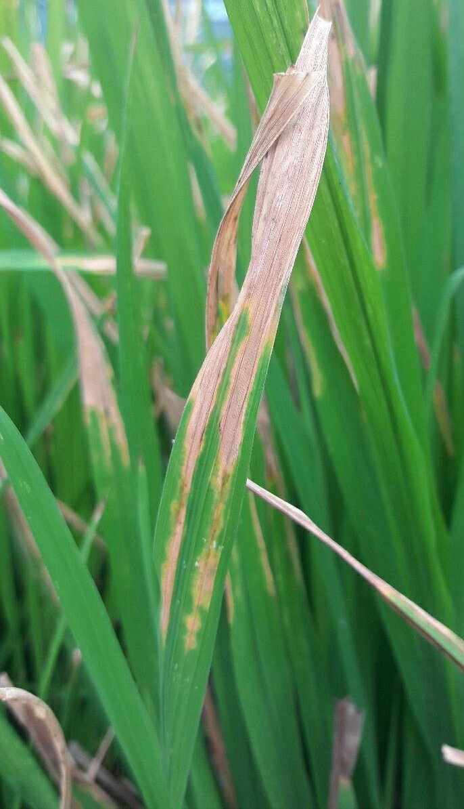

PLANT LEAF DISEASE PREDICTION AND PESTICIDE RECOMMENDATION

Disease Type
Bacterial Leaf Blight
Symptoms
- The first symptoms seen with common bacterial blight are small water-soaked spots on the underside of leaves.
- The spots enlarge and coalesce becoming brown, dry, and brittle.
- A narrow yellow border surrounding lesions also characterizes these spots.
- Lesions may be found in both interveinal areas and along leaf margins.
- Affected pods develop circular, water-soaked areas that may also have yellow masses of bacteria observed on lesions.
- Later, spots on pods, and become reddish-brown and sunken. Early pod infection results in small, shriveled and discolored seed.
Management
- Use seed that is blight tolerant, and certified to be disease-free.
- Don't spread old bean straw into fields to be planted with beans.
- Treating seed with streptomycin helps to reduce contamination of the seed coat.
- Use of copper-based sprays at the mid vegetative to flowering stages will also help to provide some control.
Home
Predict